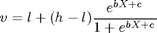
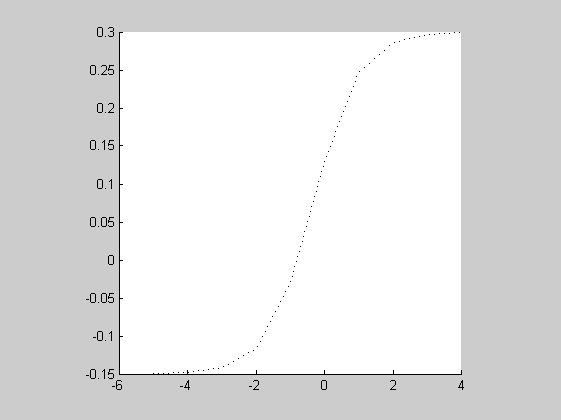
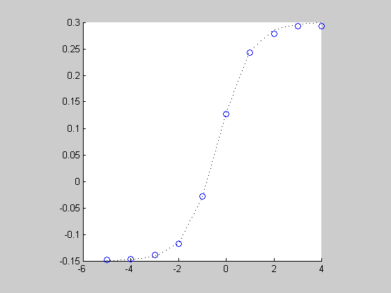

FIT4PL Fit a nonlinear model to a parameter (demo script)
By default, DMAT only allows users to fit linear models (because it uses design matrices to apply simple models. However, this is only a practical restriction, and not a theoretical one. With more advanced use of DMAT, models of higher complexity can be implemented. To do this, you need to bypass the multiestv4 function as demonstrated in this script.
Contents
Generate some data with nonlinear drifts
We're generating data where all parameters are constant, except for the drift rate, which varies nonlinearly with a covariate X. The nonlinear link function we use is the four-parameter logistic function:

The parameters are:
- Upper asymptote h = 0.30;
- Lower asymptote l = -0.15;
- Location c = 0.50;
- Slope b = 1.50;
First, clean up the workspace
clear all close all
Generate the covariate X:
x = linspace(-5,4,10);
Prepare the four-parameter logistic link:
logistic = @(p,x) p(2)+(p(1)-p(2))./(1+exp(-p(4).*x-p(3)));
p = [0.30 -0.15 0.50 1.50]; % [h l c b]
Drift rates are a logistic function of the covariate:
drifts = logistic(p,x);
So the parameter set is this:
param = repmat(standardparset(0,0),5,1); param(:,7) = drifts
param =
0.0800 0.3000 0.0800 0.0400 0.0200 0.0200 -0.1496
0.0800 0.3000 0.0800 0.0400 0.0200 0.0200 -0.1482
0.0800 0.3000 0.0800 0.0400 0.0200 0.0200 -0.1419
0.0800 0.3000 0.0800 0.0400 0.0200 0.0200 -0.1159
0.0800 0.3000 0.0800 0.0400 0.0200 0.0200 -0.0290
0.0800 0.3000 0.0800 0.0400 0.0200 0.0200 0.1301
0.0800 0.3000 0.0800 0.0400 0.0200 0.0200 0.2464
0.0800 0.3000 0.0800 0.0400 0.0200 0.0200 0.2868
0.0800 0.3000 0.0800 0.0400 0.0200 0.0200 0.2970
0.0800 0.3000 0.0800 0.0400 0.0200 0.0200 0.2993
This is what the drifts look like:
plot(x,drifts,'k:') axis square box off hold on
Now generate data from these parameters:
data = multisimul(param,10000,1);
First fit the free model
There are two ways to implement nonlinear designs. The easy way, described in this demo, involves fitting the free model (i.e., no restrictions on drift rate across conditions) first, and then using the point estimates of the drift rates to get a good initial guess of the logistic parameters. But, there may be several reasons for which you might not want to fit this free model first, and then you should apply the method demonstrated in fit4pl_hard.
In this demo, we start by fitting the free model in the usual way:
desmat = [{'1'},{'1'},{'1'},{'1'},{'1'},{'1'},{[]}];
output.Minimum = param;
output = multiestv4(data,'DesignMatrix',desmat,...
'Name','Free model');
Guess : 409570.65142700 (31-Aug-2006 15:37:58)
Simplex 1: 375943.64050236 (31-Aug-2006 15:38:16)
Simplex 2: 375310.51779322 (31-Aug-2006 15:38:35)
Simplex 3: 375249.47657239 (31-Aug-2006 15:38:54)
Simplex 4: 375228.75482478 (31-Aug-2006 15:41:18)
Final X2 : 375228.75482478 (31-Aug-2006 15:41:45)
Overlay the previous plot with recovered drift rates:
plot(x,output.Minimum(:,7),'bo')
 Obtaining the link parameters
Obtaining the four parameters of the link function is an optimization problem in itself. Fortunately, fitting a nonlinear regression line through the drift rates isn't very difficult. Here, we use the Statistics Toolbox function nlinfit. If you don't have it... Well, nonlinear regression isn't that hard.
logpars = nlinfit(x,output.Minimum(:,7)',logistic,p)
logpars =
0.2937 -0.1481 0.5071 1.5142
Estimate parameters of the new model
The previous execution of multiestv4 has provided us with an objective function that is almost the one we need (in the field output.Options.objecfun), and with a design vector that minimizes this objective (in output.Options.controls.small). Starting from this objective function, we can construct a new, higher-order objective function that reduces the number of parameters even further. This second-level objective needs to accept ten parameters: one for each of the other diffusion model parameters, and four for the link function with which it will construct drift rates for all conditions.
We can formulate the objective like this, taking only one input vector, and transforming that into a vector that the old objective will like:
wd=6; % number of free parameters excluding drift, for reusability gcp newobj = @(y) output.Options.objecfun([reshape(y(1:wd),1,wd),... logistic(y(wd+(1:4)),x)]);
Now we insert the new objective where the old one was, and store the old objective somewhere safe:
output.Options.oldobj = output.Options.objecfun; output.Options.objecfun = newobj;
We obtained an initial guess for the link parameters and the other diffusion parameters from the free model. We put that initial guess into the output.Options.controls.small field:
guess = logpars(:); output.Options.controls.small = [output.Options.controls.small(1:wd);guess];
And run the generative algorithm:
[ign options]=genalg(output.Options);
Guess : 375232.05518228 (31-Aug-2006 15:41:46)
Simplex 1: 375231.71310713 (31-Aug-2006 15:42:16)
Simplex 2: 375231.70783922 (31-Aug-2006 15:42:50)
Simplex 3: 375231.70783410 (31-Aug-2006 15:43:27)
Simplex 4: 375231.70783226 (31-Aug-2006 15:44:26)
Final X2 : 375231.70783226 (31-Aug-2006 15:44:42)
Process the output carefully
The output as genalg returns it, is based on a linear model and thus not completely correct. We need to extract the design vector of the level 2 model and restore the level 1 design vector from that.
These are the link parameters (the seventh through tenth elements of the design vector):
linkpar = options.controls.small(wd+(1:4));
And this is how we recover the drift rates from the parameters:
designvec_l2 = options.controls.small; designvec_l1 = [designvec_l2(1:wd);logistic(designvec_l2(wd+(1:4)),x)']; options.controls.small = designvec_l1; options.controls = bigger(options.controls); minimum = options.controls.large
minimum =
0.0799 0.2990 0.0786 0.0399 0.0166 0.0193 -0.1477
0.0799 0.2990 0.0786 0.0399 0.0166 0.0193 -0.1464
0.0799 0.2990 0.0786 0.0399 0.0166 0.0193 -0.1404
0.0799 0.2990 0.0786 0.0399 0.0166 0.0193 -0.1152
0.0799 0.2990 0.0786 0.0399 0.0166 0.0193 -0.0298
0.0799 0.2990 0.0786 0.0399 0.0166 0.0193 0.1277
0.0799 0.2990 0.0786 0.0399 0.0166 0.0193 0.2420
0.0799 0.2990 0.0786 0.0399 0.0166 0.0193 0.2812
0.0799 0.2990 0.0786 0.0399 0.0166 0.0193 0.2909
0.0799 0.2990 0.0786 0.0399 0.0166 0.0193 0.2931
And overlay the recovered drifts in the plot again:
plot(x,minimum(:,7),'rx-') hold off